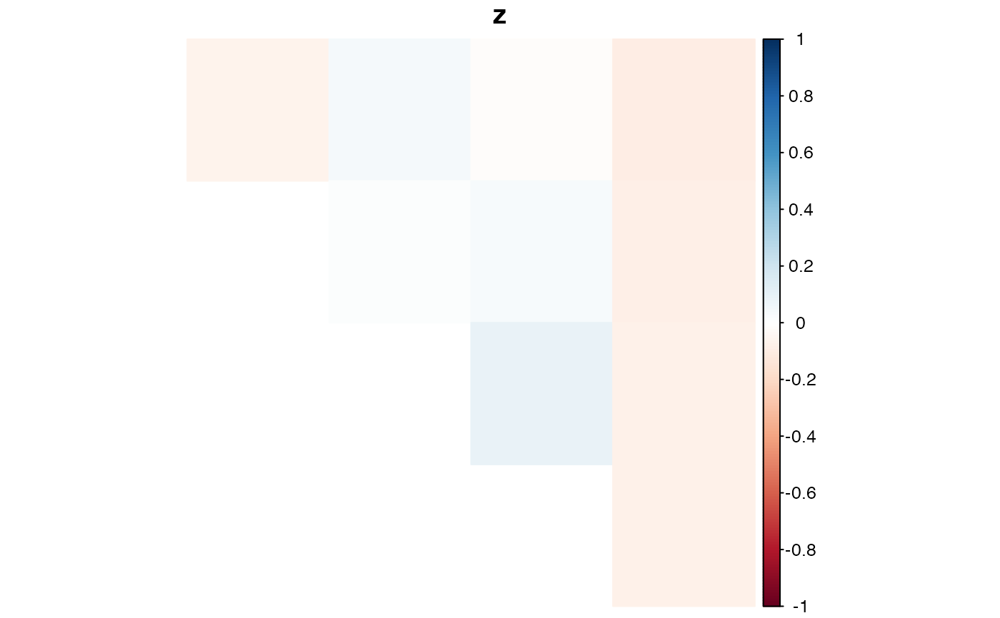

Formats the LD estimates in the form of a matrix and creates a heatmap of
these estimates. This heatmap is created using the
corrplot R package. I've adjusted a lot of the defaults
to suit my visualization preferences.
Arguments
- x
An object of class
lddf, usually created using eithermldest()orsldest().- element
Which element of
xshould we plot?- type
Character,
"full","upper"(default) or"lower", display full matrix, lower triangular or upper triangular matrix.- method
See
corrplot()for available options. Default value is"color".- diag
Logical, whether display the correlation coefficients on the principal diagonal.
- is.corr
See
corrplot(). Default behavior isTRUEif an element is constrained between -1 and 1 andFALSEotherwise.- tl.pos
See
corrplot(). Default value is"n".- title
What should the title be? Defaults to the element name.
- na.label
See
corrplot(). Default value is"square".- ...
Additional arguments to pass to
corrplot(). See the documentation of that function for options.
Details
For greater plotting flexibility, see corrplot()
for the parameter options.
Examples
set.seed(1)
## Simulate genotypes when true correlation is 0
nloci <- 5
nind <- 100
K <- 6
nc <- 1
genomat <- matrix(sample(0:K, nind * nloci, TRUE), nrow = nloci)
## Haplotypic LD estimates
lddf <- mldest(geno = genomat,
K = K,
nc = nc,
type = "hap")
## Plot estimates of z
plot(lddf, element = "z")
